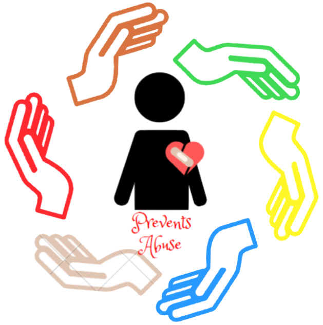
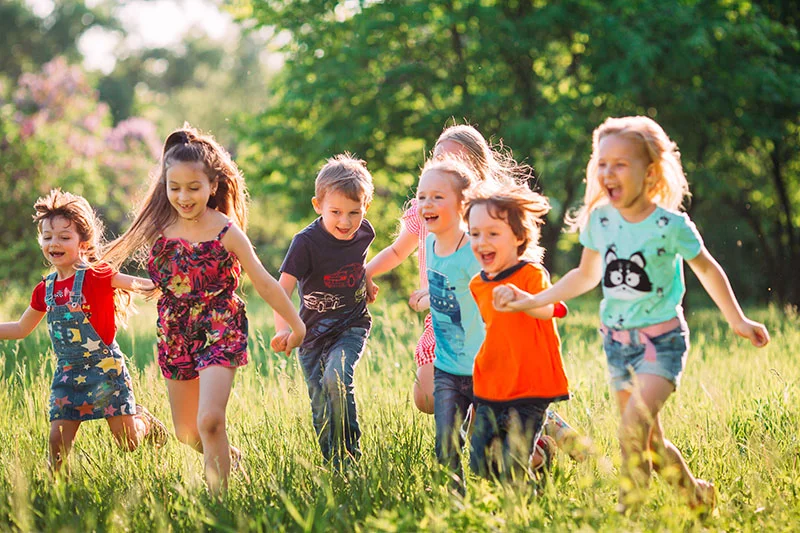

¿QUIÉNES SOMOS?
Somos un grupo de personas comprometidas con la idea de generar un impacto positivo en nuestra comunidad. Nuestro equipo está conformado por individuos con diversas habilidades y perspectivas, pero con un objetivo común: promover el bienestar y la protección de los más vulnerables. Creemos firmemente que el trabajo en equipo es la clave para enfrentar grandes desafíos, y por eso hemos unido esfuerzos para abordar un tema de suma importancia.
El problema que hemos identificado no puede ser ignorado: muchas personas, especialmente niños y otros grupos en riesgo, sufren situaciones que comprometen su seguridad y bienestar. Estas situaciones, como el maltrato infantil, la negligencia o el abuso, suelen pasar desapercibidas o no reciben la atención que merecen. Por eso decidimos enfocarnos en esta problemática. No solo queremos visibilizarla, sino también proponer soluciones y fomentar la colaboración para proteger a quienes no siempre tienen una voz.
Trabajamos en conjunto, aprovechando nuestras diferentes fortalezas, para investigar, educar y crear conciencia sobre este tema. Creemos que, como equipo, podemos marcar la diferencia. La suma de nuestras ideas, esfuerzos y dedicación nos permite generar propuestas más integrales y alcanzar un impacto más amplio. Estamos convencidos de que, unidos, podemos contribuir a construir un entorno más seguro, justo y empático para todos.


INTEGRANTES
Mariana Ortiz Ortiz
Soy una estudiante que posee valores beneficiosos para mi grupo de trabajo, como lo es la solidaridad y el liderazgo.
Mi visión es poder ayudar a las demás personas, brindando medios sustentables y de fácil entendimiento para ellos.
Destaco al poseer una increible creatividad que sirve para en muchas veces ser una persona audaz y capaz de realizar actividades comunes y simples a un lugar lleno de armonia.
Estefania Muñoz Pareja
Soy una estudiante que posee valores beneficiosos para mi grupo de trabajo, como lo es la solidaridad y el liderazgo.
Mi visión es poder ayudar a las demás personas, brindando medios sustentables y de fácil entendimiento para ellos.
Destaco al poseer una increible creatividad que sirve para en muchas veces ser una persona audaz y capaz de realizar actividades comunes y simples a un lugar lleno de armonia.
Nicole Molina
Soy una persona bastante amable, humilde y que le gusta mucho trabajar en equipo. Aporto conocimiento nivel básico académico hacia mis compañeros de clases
Mi visión en la vida es lograr alcanzar lo inalcanzable, lo que nunca pense que lograría. Respecto a la app web, queremos disminur el maltrato infantil, procurando que estos infantes, convivan en un mejor entorno
Destaco en amplia creatividad, desarrollando una mente más abierta y dispuesta a adquirir más conocimiento.
VISIÓN DE LA APP
Es un sistema de informacion sobre el abuso infantil para disminuir el mismo, esta dirigido a los educadores y docentes, para que puedan presentarle esta herramienta a los niños y adolescentes, tiene como fin buscar la concientización en los jóvenes de diferentes instituciones donde se presente un alto nivel de problemas interpersonales en los niños para disminuir la falta de educación en dicho tema. Se llama Prevents Abuse y beneficiará a los más pequeños y brindará a los docentes una herramienta didáctica de uso constante para tratar este tema a diferencia de otras herramientas relacionadas esta reunirá muchas en una sola para hacer su uso más entretenido.
En Brasil, se estima que un niño es víctima de abuso sexual cada 15 minutos, y en Argentina, el abuso infantil afecta aproximadamente al 20% de los niños.

IDENTIFICACIÓN DEL PROBLEMA
El maltrato infantil es un problema tan grave que afecta a muchos niños en todo el mundo, la falta de consciencia sobre este tema, la falta de recursos para ayudar a las familias en situaciones difíciles y la necesidad de crear entornos seguros y protectores para los niños son aspectos clave a considerar, es importante abordar este problema con interés y necesidad, ya que afecta el bienestar emocional, fisico y psicologico de los niños, y puede tener repercusiones a lo largo de toda su vida. Es crucial educar a la sociedad sobre la importancia de detectar, prevenir y denunciar el maltrato infantil, asi como proporcionar apoyo a las familias para romper el ciclo de abuso y saber que hacer en este momento de crisis.
INFORMACIÓN ESPECIFICA
¿Qué hacer en caso de que sufra algún tipo de maltrato infantil?

En caso de sospechar maltrato infantil, es crucial actuar con rapidez. Primero, escucha al niño sin presionarlo y evita juzgarlo. Luego, contacta a las autoridades o servicios de protección infantil locales para informar la situación. No intentes confrontar al presunto agresor. Mantén la calma y, si es posible, brinda al niño un entorno seguro mientras las autoridades intervienen. El bienestar del menor es la prioridad.
¿Por qué decidimos escoger este tema?
Decidimos escoger este tema porque creemos que es fundamental velar por el bienestar de los demás, especialmente de aquellos que se encuentran en situaciones de vulnerabilidad. Consideramos que crear conciencia sobre este asunto no solo ayuda a identificar y prevenir problemas, sino que también contribuye a construir una sociedad más segura y solidaria. Nuestro objetivo es aportar con información y herramientas que promuevan la empatía y la acción, buscando siempre mejorar la calidad de vida y proteger a quienes más lo necesitan.
¿Cuál es nuestro objetivo?
Analizar los problemas encontrados en jóvenes sobre el maltrato infantil y por medio de esto enfocarnos en brindarles múltiples herramientas para identificarlo y contrarrestar ese tipo de abusos.